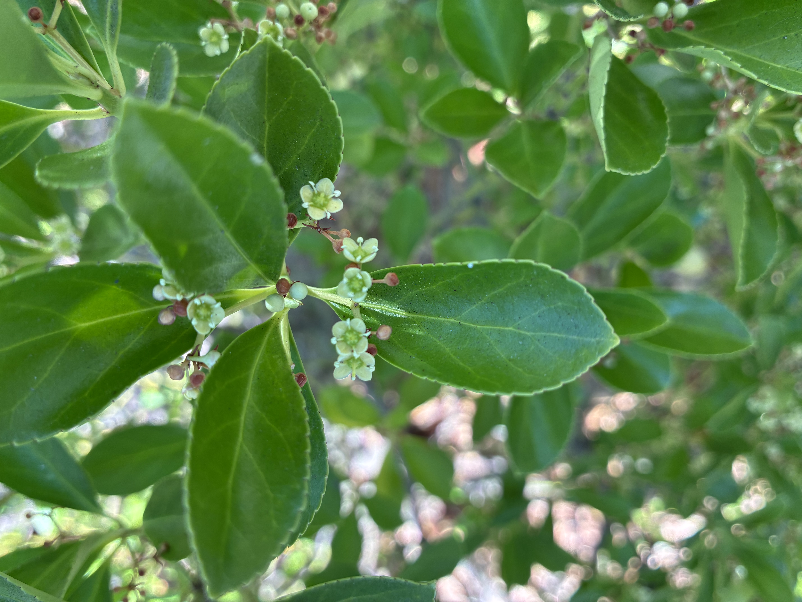

Roots of Unity
The representation of mathematical structure in nature is beautiful. Here is a catalog of regular polygons that I have found represented in plants.
An explanation of the title—The complex solutions of the polynomial \(x^n-1\) are also the vertices of a regular \(n\)-sided polygon and are known to mathematicians as the \(n\)th roots of unity. Unity is a sweet name for 1, isn't it?
A word to the botanists—You have invented a language to talk about these things! When we count the parts of a flower we determine its merosity. And here I have often counted the number of petals in the whorl of the corolla.
Henagon
Digon

Trigon

Tetragon
Pentagon

Hexagon

Heptagon
Octagon
Enneagon
Decagon
Hendecagon
Dodecagon
Tridecagon